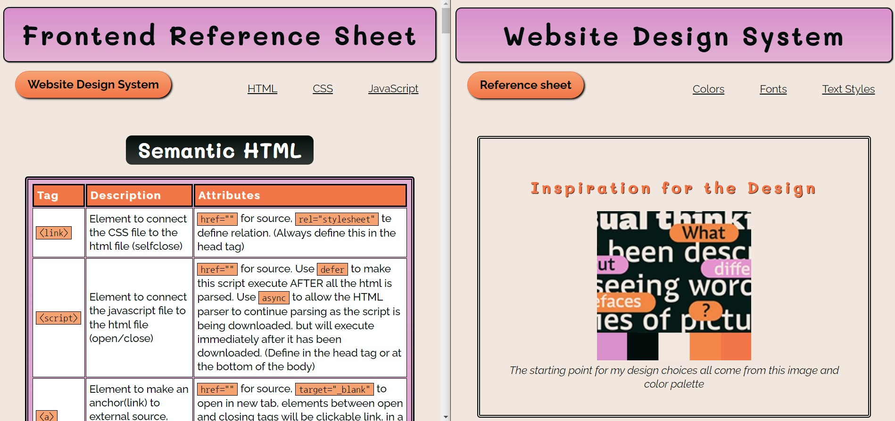

Welcome to my software developer portfolio.
About Me

I'm Michelle Curfs, currently 25 years old and I am Dutch.
After highschool I have been looking for my next big step, having tried some different educations that didn't work out for me. I started to work in retail to fill up the space, get work experience and kept searching for a new path.
After recommendations from friends and my partner I started a bootcamp for Fullstack Software Developer in the end of 2020 and completed it with a certificate in the beginning of 2021.
At the moment i am taking the Front-end Engineer course on Codecademy!
In my spare time I like to play Final Fantasy XIV with friends, cuddle (a.k.a lovingly annoy) my 2 cats and partner and watch some streamers or anime.
From time to time I like to dive into my more hands-on creative hobbies such as drawing, painting etc.
Projects
Reference Sheet and Design System
Description: For an assignment on Codecademy i had to make a cheat sheet about some of the material i learned in the HTML/CSS chapters of the course.
The screenshot above shows a tiny bit of the two pages currently in this project.
The starting page contains tables filled with tags or properties i would like to quickly look back on in my reference sheet, combined with their descriptions and possible values.
From the navigation bar you can get to the design system page where certain choices and settings used in the styling of the project are shown.
You can take a look at the live project here and at the code itself here!
Languages used: HTML, CSS
Meal Maker
Description: A fun assignment for getting familiar with JavaScript on Codecademy. A "menu" object-factory had to be made with getters, setters and some extra functions inside. New items could be added to the courses of the menu and a random meal could be generated from these items. In the console a string could be logged of a filled menu, which meal you will get for each course and the total price you would have to pay. You can take a look at the code itself here!
Languages used: JavaScript
These examples above are just some of the projects i have worked on. For more you can take a look on my Github page!